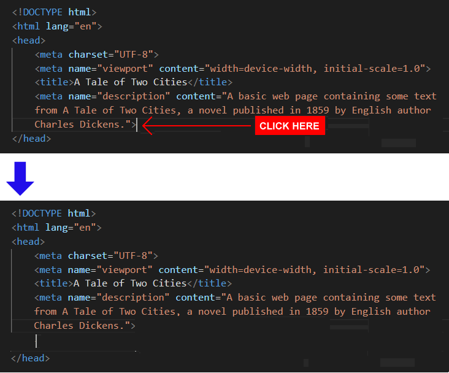
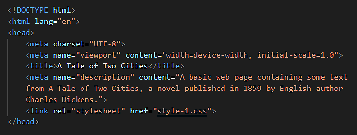
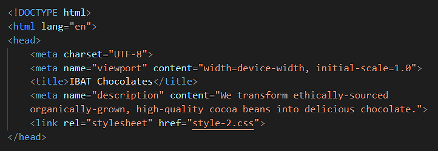
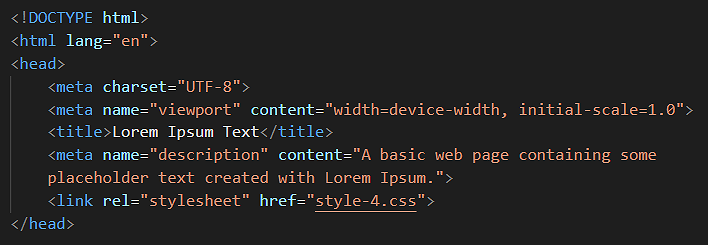
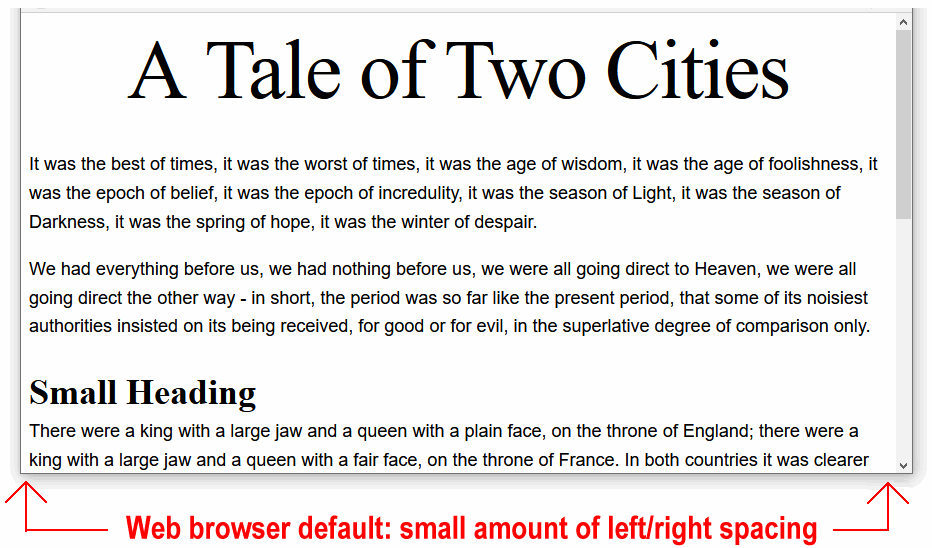

Update the style rules in a CSS file and view the effect on a linked web page.
You can view finished versions of the four sample web pages you style with four sample CSS files in this Tutorial by clicking the links below. The finished samples will each open in a new tab of your web browser.
In the previous Introduction to CSS tutorial you were introduced the CSS properties most commonly used by web designers to format the content of web pages.
In this Tutorial you will apply these CSS properties to the four web pages you created in the Introduction to HTML Tutorial.
Downloading your four CSS files
Your first task is to download four stylesheet files, one for each of your four sample HTML pages. Here are the steps.
Check that your websites folder contains the four sample HTML files from the Introduction to HTML Tutorial and the four downloaded CSS files.
In the remainder of this Tutorial you will work with these four CSS files along with the four corresponding HTML web page files.
Styling your first sample web page
You will use the style-1.css stylesheet file to style the sample page-1.html web page.
In Visual Studio Code, open the page-1.html file.
Before you can apply styles from a stylesheet to a web page, you first need to link the stylesheet flle to that page.
VS Code provides the following shortcut to help you do this.
In the head section of the page-1.html file, at the end of the description details, click with the mouse and press the Enter key to open a new, blank line.

Click at the beginning of this new line, press the letter l key to display a pop-up menu with the link:css option already selected.
Click this link:css option with the mouse, or press either the Enter key to select it.
VS Code adds the stylesheet link code to your web page.
As you can see, VS Code gives the default name of style.css to the linked stylesheet file.
Edit the default name to style-1.css.
DO NOT type the name of stylesheet file with an upper-case ‘S’ as in Style-1.css.
And DO NOT use some other mixture of upper and lower-case letters, such as STYLE-1.CSS or style-1.CSS or whatever.
Also, DO NOT enter any blank spaces in the name of your file: type style-1.cssNOTstyle- 1.css or style -1.css.
The head section of your web page should now look as shown below.

Save your page-1.html file.
Your page-1.html web page is now linked to your style-1.css stylesheet file.
In your web browser, display the page-1.html web page.
It should look like the web page at the following web address:
You can now close your style-1.css file in VS Code.
Styling your second sample web page
Next, you will apply the style-2.css stylesheet file to the sample page-2.html web page.
In VS Code, open the page-2.html file.
In the <head> of your web page, just before the closing </head> tag, press the Enter key to open a new, blank line, and then copy-and-paste the following stylesheet link to this new line.
<linkrel="stylesheet"href="style-2.css">
The <head> section of your web page should now look as shown below.

Save your page-2.html file.
Your page-2.html web page is now linked to your style-2.css stylesheet file.
In your web browser, display the page-2.html web page.
It should look like the web page at the following web address:
Next, you will apply the style-3.css stylesheet file to the sample page-3.html web page.
In VS Code, open the page-3.html file.
In the <head> of your web page, just before the closing </head> tag, press the Enter key to open a new, blank line, and then copy-and-paste the following stylesheet link to this new line.
<linkrel="stylesheet"href="style-3.css">
The <head> of your web page should now look as shown below.
Save your page-3.html file.
Your page-3.html web page is now linked to your style-3.css stylesheet file.
In your web browser, display the page-3.html web page.
It should look like the web page at the following web address:
Next, you will apply the style-4.css stylesheet file to the sample page-4.html web page.
In VS Code, open the page-4.html file.
In the <head> of your web page, just before the closing </head> tag, press the Enter key to open a new, blank line, and then copy-and-paste the following stylesheet link to this new line.
<linkrel="stylesheet"href="style-4.css">
The <head> of your web page should now look as shown below.

Save your page-4.html file.
Your page-4.html web page is now linked to your style-4.css stylesheet file.
In your web browser, display the page-4.html web page.
It should look like the web page at the following web address:
You can close your page-4.html web page in VS Code.
Updating the CSS style rules: sample page four
Let’s update the linked style-4.css stylesheet file and see the effect on your web page.
In VS Code, open the style-4.css file.
For this web page, the task is to display all the headings, sub-headings and paragraphs of text with a font-family of sans-serif.
You could add the following style rule to each one of the CSS selectors:
font-family: sans-serif;
But because all the styles on the web page are to have the samefont-family value, a quicker option is to add just one new rule to the body selector at top of the stylesheet file.
body { font-family: sans-serif; }
Save your style-4.css stylesheet file.
Display your page-4.html web page in your web browser.
It should now look like the web page at the following web address:
You can now close your style-4.css file in VS Code.
Setting the web page width
Below are four typical examples of modern web pages that have all their content – both text and images – laid out in a single column.
As you can see, all have lots of spacing at the left and right edges of the content. This is called ‘white space’ or ‘negative space’. Its purpose is to make the text more inviting and easier to read.
By default, web browsers add a small amount of ‘white space’ at the left and right edges of the web browser window.
You can see this in the four sample web pages you have created and styled. One example is shown below.

Let’s add some wider, more user-friendly left and right spacing to your four sample web pages.
In VS Code, open all four of the sample stylesheet files:
style-1.css style-2.css style-3.css style-4.css
At the top of each stylesheet file, copy-and-paste this comment line, followed by a new body selector with two style rules.
20% of blank spacing has been added to the left and right of the web page content.
The width of the single column of content is now 60% of the total screen width.
Uploading your files to GitHub
After completing your web pages and stylesheets, your next step is to upload them to your account on GitHub.
Open a new tab in your web browser and go to GitHub.com. If you are not already signed in to your GitHub account, sign in now.
On your GitHub home page, click the name of the repository (‘repo’) that holds your web pages. Its name will look as follows, where username is your chosen username on GitHub.
username.github.io
On the next GitHub screen displayed, near the right of the screen, you can see a button named Add file. Click on it.
From the dropdown list displayed, choose the option Upload files.
In File Explorer (Windows 10) or Windows Explorer (Windows 7), select or drag-and-drop the following eight files to upload them to your GitHub account.
page-1.html page-2.html page-3.html page-4.html style-1.html style-2.html style-3.html style-4.html
Finally, scroll down to the bottom of the GitHub screen, enter a short message in the Commit changes box click the Commit changes button, and wait for the upload to complete.
Your web pages are now published on GitHub at web addresses similar to the following, where username is the username you have chosen for your GitHub account: